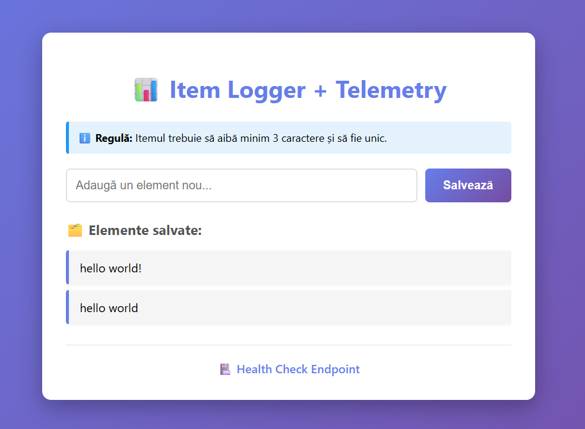
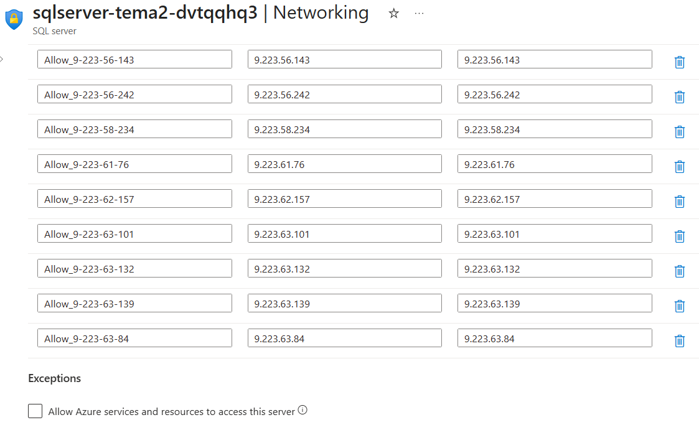
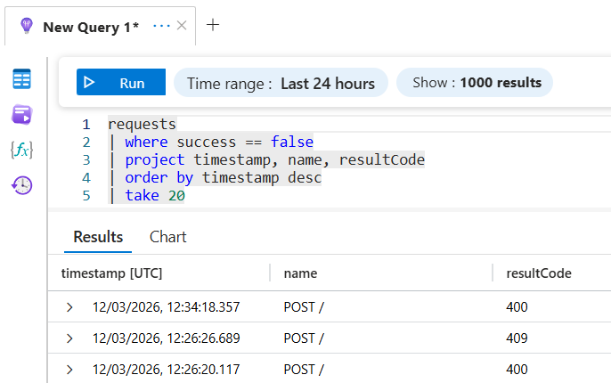
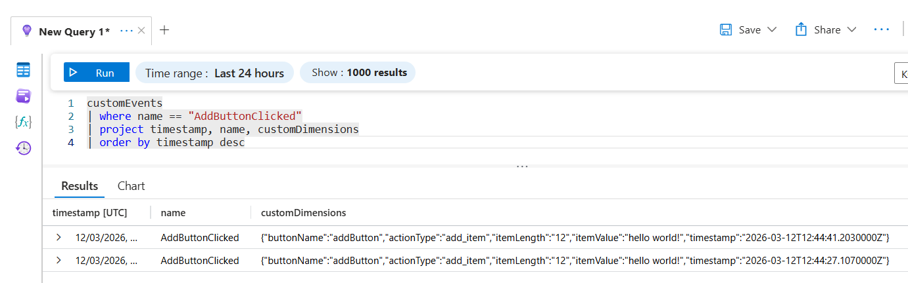
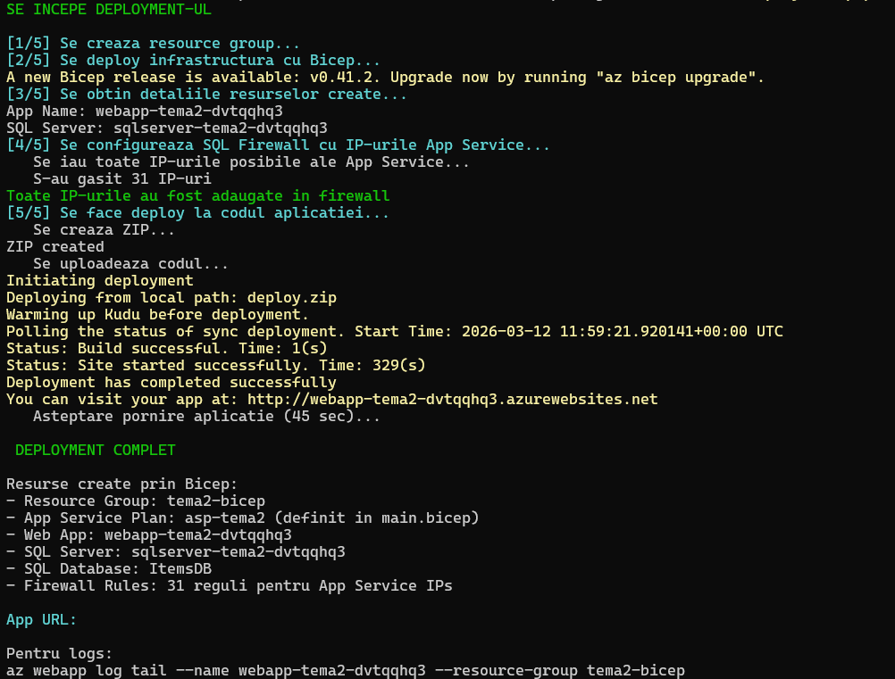

Sunt absolventă de Cibernetică Economică și masterandă la FMI (UniBuc), specializarea Baze de Date și Tehnologii Software.
Am aprofundat dezvoltarea web prin cursuri (CS50, Codecademy) și proiecte personale construite de la zero — acoperind întreg procesul: backend cu Java/Spring Boot și microservicii, frontend cu React și JavaScript, cloud cu Azure și analiză de date cu Python și PySpark.
Combinația dintre studiile în cibernetică economică și specializarea tehnică îmi oferă o perspectivă mai largă — înțeleg atât cum se construiește o aplicație, cât și de ce și pentru cine este construită.
🔧Abilități Tehnice
Tehnologii cu care lucrez în dezvoltarea aplicațiilor, pe care le învăț și le aprofundez continuu:
🌐Tehnologii Web
HTML
CSS
🖥️Limbaje de Programare
JavaScript
Python
Java
Kotlin
🏗️Framework‑uri & Biblioteci
React
Spring Boot
Flask
🎨Design & Prototipare
Figma
Canva
☁️Microservicii & Cloud
Spring Cloud
Docker
Azure
Kubernetes
RabbitMQ
🗄️Baze de Date
MySQL
OracleDb
📊Data Science
Pandas
NumPy
PySpark
🫱🏼🫲🏾Management & Colaborare
Jira
Confluence
🧩Proiecte
Proiecte pe care le-am construit pentru a explora diverse tehnologii și a-mi dezvolta abilitățile practice
🩺 KinetoCare — Platformă Clinică și Management Pacienți
Platformă pentru digitalizarea clinicilor de kinetoterapie, dezvoltată pornind de la analiza unei aplicații reale din domeniu și a nevoilor identificate împreună cu un kinetoterapeut. Gestionează end-to-end fluxul clinic: de la programări și comunicare în timp real, până la evaluări clinice și monitorizarea vizuală a progresului pacienților.
1. Autentificare & Control Acces (RBAC)
Register și login prin Keycloak (OAuth2/JWT). Fiecare rol — pacient, terapeut, administrator — primește un dashboard izolat, iar accesul la resurse este autorizat strict prin ROLE_* la nivelul fiecărui microserviciu.
2. Logica de Booking — Selecție Automată a Serviciului
La crearea unei programări, platforma determină automat serviciul necesar: evaluare inițială (fără istoric), serviciul recomandat de terapeut (ședințe disponibile) sau reevaluare forțată (ședințe epuizate) — cu notificare asincronă trimisă terapeutului prin RabbitMQ.
3. Fișa Clinică & Grafice de Evoluție
Terapeutul accesează fișa completă a pacientului: evaluări inițiale, re-evaluări și grafice generate automat din jurnalele de recuperare (nivel durere, oboseală, dificultate exerciții) — pentru suport decizional vizual.
4. Chat în Timp Real & Notificări
Mesagerie bidirecțională pacient-terapeut prin WebSockets/STOMP, cu validarea token-ului JWT la inițierea conexiunii. Sistemul de notificări in-app acoperă programări noi, mesaje necitite și remindere de re-evaluare.
5. Dashboard Administrativ
Gestiunea locațiilor și catalogului de servicii, dezactivarea conturilor cu anularea automată a programărilor viitoare aferente și statistici agregate per locație: programări, venituri, terapeuți activi, rată de anulări.
6. Infrastructură: Docker & Kubernetes
Containerizare completă: multi-stage build pentru frontend (Node.js → Nginx) și imagini bazate pe JRE Alpine pentru serviciile Spring Boot. Orchestrare Kubernetes cu Deployments, PVC pentru persistență, ConfigMap/Secrets, ReadinessProbe/LivenessProbe și Ingress Controller ca punct unic de intrare.
🛠️ Tehnologii: Java, Spring Boot, Spring Cloud Gateway, WebFlux, OpenFeign, Keycloak, RabbitMQ, WebSockets/STOMP, React, Vite, MySQL, Docker, Kubernetes





🔒 Secure Cloud App & Telemetry
Aplicație web dinamică găzduită în Azure App Service, construită progresiv — de la persistență securizată în Azure SQL până la monitorizare end-to-end prin Application Insights.
1. Aplicație Web (Item Logger)
Backend Flask conectat la Azure SQL Database pentru operațiuni CRUD, cu persistența datelor demonstrabilă la refresh.
2. Securitate Bază de Date
Acces restricționat prin firewall strict — sunt permise exclusiv IP-urile de ieșire ale App Service-ului, cu regula implicită Azure dezactivată.
3. Logare Erori & Observabilitate
Backend-ul înregistrează erori de validare (texte prea scurte, duplicate) cu coduri HTTP specifice (400, 409), analizate prin KQL în Log Analytics.
4. Telemetrie Frontend
Evenimentul AddButtonClicked este trimis din browser via Application Insights JS SDK, monitorizând comportamentul utilizatorului în timp real.
5. Infrastructure as Code
Infrastructura este provizionată declarativ prin Azure Bicep, iar configurarea dinamică a firewall-ului se face prin scripturi PowerShell.
Aplicație web pentru gestionarea și evaluarea filmelor. Utilizatorii pot căuta filme prin API, crea liste personalizate, lăsa review-uri cu rating și primi recomandări bazate pe preferințe.
Funcționalități:
Căutare filme prin API cu posibilitatea de adăugare manuală
Sistem de wishlist-uri personalizabile
Review-uri publice/private cu rating agregat
Recomandări personalizate pe pagina principală
🛠️ Tehnologii: React.js, Spring Boot, SQL
💼 HRManager
Aplicație pentru managementul angajaților în departamentele de resurse umane. Permite gestionarea datelor personale, evidența concediilor și generarea de rapoarte vizuale pentru analiză.
Funcționalități:
Autentificare și management sesiuni
Operațiuni CRUD pentru datele angajaților
Sistem complet de gestionare concedii
Dashboard cu grafice pentru analize HR
Teme UI personalizabile
🛠️ Tehnologii: Python (Flask), HTML/CSS, JavaScript, MySQL
📱 LostPals
Aplicație Android dezvoltată în echipă pentru recuperarea obiectelor și animalelor pierdute. Utilizatorii pot posta anunțuri cu detalii, iar cei care le găsesc pot contacta proprietarii direct prin chat-ul integrat.
Funcționalități:
Feed cu postări filtrate pe locație
Upload imagine și descriere detaliată pentru anunțuri
Analiză predictivă a performanței academice pe un dataset de 1000+ studenți, folosind PySpark pentru procesare și modele ML/DL pentru predicții în timp real.
1. Regresia Liniară
Predicția scorului la examen pe baza orelor de studiu, somn și a timpului petrecut online.
2. Regresia Logistică
Clasificarea binară (promovat/nepromovat) în funcție de orele de studiu și prezența la cursuri.
3. Deep Learning & Optimizare
Implementarea unei rețele neuronale (MLP) și optimizarea hiperparametrilor cu GridSearchCV.
4. Echilibrarea Datelor (Undersampling)
Rezolvarea dezechilibrului dintre clase pentru a îmbunătăți semnificativ detecția studenților nepromovați.
5. Proces de Streaming
Simularea unui pipeline de date în timp real pentru a prezice rezultatele noilor studenți.